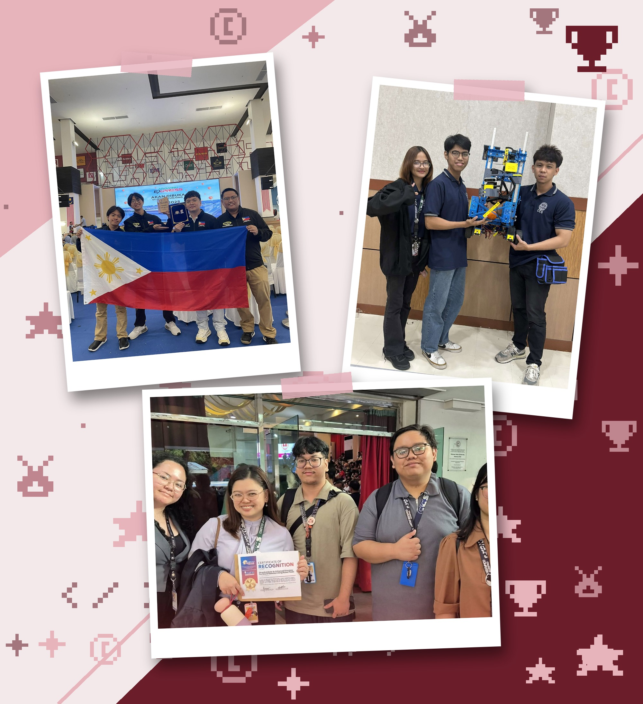

Bachelor of Science in Information Technology | Technology and Engineering College for Humanity
Proudly carrying the name of DYCI
Our BSIT students don't just learn inside the classroom, they take their skills to the stage. From national skills competitions and research conferences to representing the Philippines on an international stage, DYCIans continue to prove what hard work, teamwork and passion for technology can achieve. Every certificate, medal and recognition is a reflection of the dedication of our students and the guidance of our faculty, and a reminder that great things start with a single line of code.
